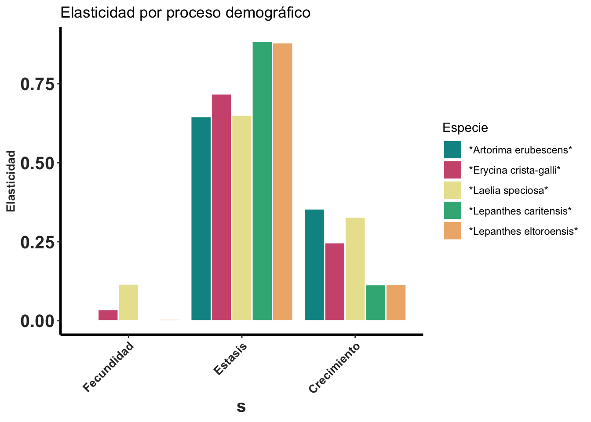
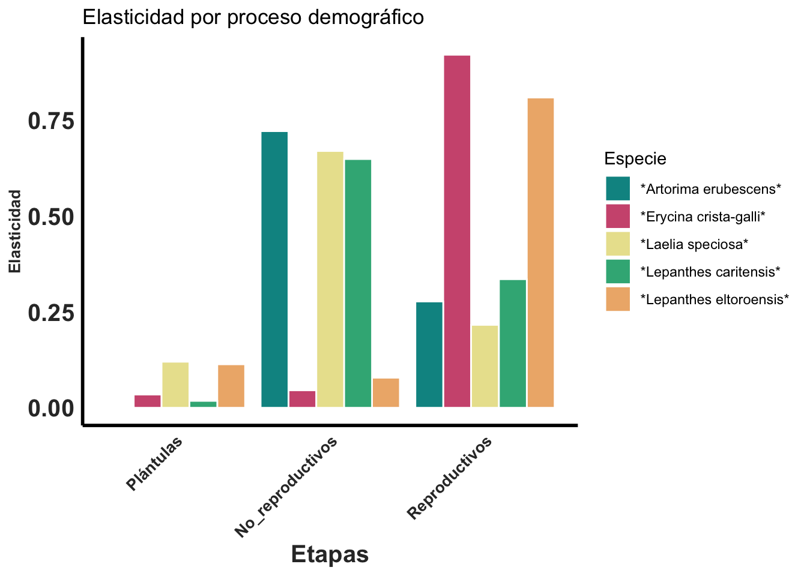

Código
library(popdemo)
library(popbio)
library(ggplot2)
library(dplyr)
library(scales)
library(gt)
library(janitor)
library(tidyr)
library(flextable)
library(ftExtra)Autores: “Demetria Mondragón, Ernesto Mujica y Elaine González”
La elasticidad poblacional permite identificar qué transiciones del ciclo de vida tienen el mayor impacto proporcional sobre la tasa de crecimiento poblacional (λ). Este capítulo introduce la lógica, el cálculo y la interpretación aplicada de esta métrica.
La elasticidad describe cuánto cambia la tasa de crecimiento poblacional (λ) ante pequeñas variaciones proporcionales en los parámetros vitales de la matriz (supervivencia, crecimiento, fecundidad). A diferencia de la sensibilidad, que evalúa cambios absolutos, la elasticidad normaliza por la magnitud del parámetro y permite comparar la influencia relativa de transiciones con escalas distintas. En este módulo se muestra: (i) cómo derivar elasticidades a partir del modelo matricial de Leslie/Lefkovitch, (ii) por qué ciertas etapas (p. ej., supervivencia en adultos de larga vida) dominan λ en especies longevas, y (iii) cómo interpretar estos resultados para priorizar acciones de manejo (protección de etapas clave, reducción de variabilidad en vital rates críticos). Incluimos ejemplos reproducibles con matrices reales y gráficos que contrastan elasticidades vs. sensibilidades, destacando cuándo la decisión de manejo cambiaría si usamos una u otra métrica. Finalizamos con recomendaciones prácticas: cómo reportar elasticidades con intervalos de confianza, cómo evitar interpretaciones erróneas cuando existen correlaciones entre transiciones, y cómo integrar elasticidades en un análisis LTRE o en simulaciones de escenarios. Esta lección se diferencia de las anteriores (fecundidad, crecimiento poblacional) porque conecta directamente la teoría con decisiones de conservación, mostrando el impacto marginal de cada transición sobre λ en términos comparables y accionables.
library(popdemo)
library(popbio)
library(ggplot2)
library(dplyr)
library(scales)
library(gt)
library(janitor)
library(tidyr)
library(flextable)
library(ftExtra)rlt_theme <- theme(
axis.title.y = element_text(colour = "grey20", size = 10, face = "bold"),
axis.text.x = element_text(colour = "grey20", size = 10, face = "bold"),
axis.text.y = element_text(colour = "grey20", size = 15, face = "bold"),
axis.title.x = element_text(colour = "grey20", size = 15, face = "bold")
) +
theme(
# Remover los border
panel.border = element_blank(),
# Remover las lineas
panel.grid.major = element_blank(),
panel.grid.minor = element_blank(),
# Remove el fondo del panel
panel.background = element_blank(),
# añadir lineas más gruesas
axis.line.x = element_line(colour = "black", linewidth = 1),
axis.line.y = element_line(colour = "black", linewidth = 1)
)
diverging= c("#009392","#CF597E","#E9E29C", "#39B185","#EEB479" , "#9CCB86" )
# --- 2. Combine them into a list object ---
# This list can be added to the plot with a single '+'
rlt_style_fill <- function() {
list(
rlt_theme,
scale_fill_manual(values = diverging)
)
}
rlt_style_colour <- function() { #este es mi codigo personal de color
list(
rlt_theme,
scale_colour_manual(values = diverging)
)
}Las matrices de elasticidad son un complemento de las matrices de transición, que nos permiten evaluar el efecto de “pequeños cambios” en los parámetros de la matriz de transición sobre la tasa de crecimiento de la población (\(\lambda\)); así, las entradas de la matriz de elasticidad que presenten los valores más altos, serán aquellas que más impacto tendrán sobre el comportamiento de lambda (\(\lambda\)) (Kroon et al., 1986; Caswell, 2001). Esos cambios pueden tener un efecto positivo o negativo sobre el crecimiento poblacional (Caswell, 2001). El uso de las elasticidades en ecología de plantas se remonta a 1974 cuando Sarukan y Gadgil trataron de evaluar la importancia relativa de la reproducción sexual versus la reproducción vegetativa de tres especies de Ranunculus (Sarukhan & Gadgil, 1974; Kroon et al., 1986).
El concepto de elasticidad en biología es un método orientado a evaluar el cambio proporcional en una variable en respuesta a un cambio proporcional en otra variable. En términos de matrices de transición, la elasticidad es una medida de la sensibilidad de la tasa de crecimiento poblacional a cambios. En otra palabra si uno cambia uno de los parámetros de la matriz de transición, la elasticidad mide cuánto cambiaría la tasa de crecimiento poblacional (Kroon et al., 1986). En biología, la elasticidad es una herramienta para entender la importancia del cambio de cada etapa de la historia de vida sobre la tasa de crecimiento poblacional ya que permite identificar las etapas que más contribuyen a la tasa de crecimiento poblacional. Esa herramienta es muy útil para la conservación de especies y para la gestión de recursos naturales por que en parte nos indica cuan sensitiva esta el crecimiento poblacional cuando se cambia los parámetros de la historia de vida (las transiciones, supervivencia y fecundidad) de una especie. Un cambio proporcional se refiere a que, por ejemplo, si se cambio una de las transiciones de 1% que efecto tiene sobre el crecimiento intrínseco de la población, versus si se cambio de 1% en fertilidad. De esta forma uno tiene una herramienta de comparación del impacto que tuviese hipotéticamente los cambios si se podría lograr hacer estos cambios.
La elasticidad en la Biología de la Conservación no solo se basa en la observación de su matriz, que con sus valores podemos interpretar la vulnerabilidad de la población a las transiciones. La elasticidad predice el efecto futuro de las probabilidades medias de hechos pasados, respondiendo a la pregunta: ¿cuál de los cambios en las tasas vitales, tomados de uno en uno y manteniendo constante los demás, produciría el mayor efecto en la tasa de crecimiento de la población? En otras palabras, la elasticidad nos dará los efectos de pequeños cambios en las tasas vitales. Las tasas vitales con una baja elasticidad suelen tener una alta variabilidad, mientras que las de elevada suelen variar poco. La variabilidad de los parámetros vitales suele estar negativamente correlacionada con su elasticidad media (Ehrlén & Van Groenendael, 1998). Por ello no solamente se debe tener en cuenta cuan sensible es lambda (\(\lambda\)) a una transición, sino también, cuanta variación en esa transición puede ocurrir, o de hecho ocurre, y cómo covaría con otras transiciones (Ehrlén & Van Groenendael, 1998).
En términos matemáticos la elasticidad es el cambio proporcional de \(\lambda\) con cambios proporcionales en los parámetros de la matriz. En otras palabras, por cada unidad de cambio en un parámetro se reflejará en un cambio en \(\lambda\) (Kroon et al., 1986). La elasticidad \(e_{ij}\) de \(\lambda\) con respecto \(a_{ij}\) (es el elemento i, j de la matriz) es definida como:
\[e_{ij}=\frac{a_{ij}}{\lambda}\frac{\alpha}{\alpha_{ij}}\]
\[=\frac{\alpha log \lambda}{\alpha log a_{ij}}\]
La elasticidad \(e_{ij}\) es solamente la pendiente del log de \(\lambda\) gráficado contra log \(e_{ij}\). Debido a que los incrementos sobre una escala logarítmica corresponden a cambios similares proporcionales en una escala aritmética, por consecuencia la elasticidad mide la sensibilidad proporcional. Las elasticidades pueden ser calculadas y mostradas de manera conveniente como una matriz de elasticidad.
\[E=\frac{a_{ij}}{\lambda}\frac{\alpha}{\alpha_{ij}}\] \[=\frac{1}{\lambda}{S}\circ A\] Donde S es la matriz de sensibilidad y \(\circ\) el producto de Hadamard (Caswell, 2001).
Las matrices de elasticidad tienen la ventaja de que la suma de las entradas suman a uno, por lo que permite sumar diferentes entradas de la matriz, para evaluar la importancia de procesos (crecimiento, decrecimiento, permanencia o reproducción) o s sobre la \(\lambda\) (Silvertown, Franco & Menges, 1996). Ha sido una herramienta ampliamente utilizada para el desarrollo de planes de manejo y conservación de especies ya que permite identificar a que s o procesos se deben enfocar los esfuerzos de conservación (Tremblay, 1997; Mondragón, 2009; Berry & Cleavitt, 2021; Timsina et al., 2021) o en caso opuesto para determinar que s pueden ser utilizados sin impactar fuertemente a la población (Mondragón, 2009). En el último concepto si tuviésemos que remover individuos de la población, cuál de los estados tuviese el menos impacto sobre la supervivencia de la población si fuesen removido.
La diferencia entre sensibilidad y elasticidad es que la sensibilidad mide el impacto en λ de cambiar la magnitud absoluta de una tasa vital particular en relación con el cambio de otras tasas vitales (Caswell, 1989), lo que implica que los cambios en las tasas de crecimiento, permanencia tendrán un valor de uno (ya que se estas tasas son proporciones), en tanto que los cambios en fecundidad podrán ser desde uno hasta cientos o miles, ya que se la fecundidad se calcula con en base a otra escala biológica (tal como número de semillas o plántulas). La elasticidad por su parte, calcula la sensibilidad proporcional de λ a los cambios en una tasa vital (Kroon et al., 1986) evitando de esta forma el efecto de la magnitud del cambio. Cuanto mayor sea el valor de la elasticidad de la tasa vital, mayor será la contribución relativa de esa tasa vital a \(\lambda\).
Tomando como ejemplo la matriz de elasticidad de Erycina crista-galli una orquídea de ramilla (Mondragón, Maldonado & Aguilar-Santelises, 2007), podremos recapitular todo lo previamente dicho (Tabla 1), así, lo primero que hay que recalcar es que el valor más alto de elasticidad para esta orquídea corresponde a la permanencia de los individuos adultos 2, es decir que cualquier pequeño cambio en el valor de dicha entrada (en la matriz de transición), tendrá el mayor impacto en el valor de ** al comparar con otras estados de vida; segundo, es importante observar que al sumar todas las entradas de la matriz se obtiene un valor de uno. Lo mismo se mantiene cuando se suman todos los valores de elasticidad por o por proceso. Es decir, si sumamos todos los valores de cada columna, tendremos el valor de elasticidad de cada elemento, para este caso el valor más alto lo ostenta el de adultos 2 (0.818), lo que implica que el destino de la población de *E. crista-galli* depende mayormente de lo que les pase a los individuos adultos.
etapas <- c ("plántula", "juvenil", "adulto1", "adulto2")
ec <- matrix (c(0, 0, 0.004, 0.062,
0.195, 0, 0, 0,
0.171, 0.120, 0.053, 0.04,
0.073, 0.10, 0.435, 0.447),
nrow = 4, ncol=4, byrow = TRUE,
dimnames = list(etapas, etapas))
# echow to add a column with the names of the stages to the script below
| stages | plántula | juvenil | adulto1 | adulto2 |
|---|---|---|---|---|
| plántula | 0.000 | 0.000 | 0.001 | 0.058 |
| juvenil | 0.015 | 0.000 | 0.000 | 0.000 |
| adulto1 | 0.030 | 0.008 | 0.011 | 0.059 |
| adulto2 | 0.014 | 0.007 | 0.096 | 0.702 |
| suma | 0.059 | 0.015 | 0.108 | 0.819 |
En la tabla se ve los diferentes valores de elasticidad por procesos en Erycina crista-galli (Mondragón, Maldonado & Aguilar-Santelises, 2007) y el impacto por diferentes procesos de la historia de vida de la población. Ahora, si lo que quisiéramos saber es determinar que proceso o tasa vital es lo que rige el comportamiento de la población, lo que se hace es sumar las entradas de la matriz que lo representan, en este caso hemos puesto en diferentes colores las entradas que manifiestan cada tasa, en rojo es la permanencia, en azul el crecimiento, en amarillo el decrecimiento o retrogresión y en verde la fecundidad. Eso nos permite determinar que es el impacto de elasticidad por procesos y tasas vitales, sumando cada uno de los valores en cada categoría. Es claro que el impacto principal de la población de E. crista-galli depende de la permanencia de los individuos, seguido por el crecimiento, en tanto que la fecundidad y la retrogresión tienen un impacto menor.
La suma de cada grupo:
#elas(ec)
# Convertir la matriz de elasticidad en un data frame
ec_df = as.data.frame(elas(ec)) |> round(3)
# Sumar las elasticidades por procesos (crecimiento, permanencia y fecundidad)
ec_df plántula juvenil adulto1 adulto2
plántula 0.000 0.000 0.001 0.058
juvenil 0.015 0.000 0.000 0.000
adulto1 0.030 0.008 0.011 0.059
adulto2 0.014 0.007 0.096 0.702ec_df %>%
gt() %>%
tab_style(
style = cell_fill(color = 'lightgreen'),
locations = cells_body(
columns = c(4),
rows = c(1)
)
) %>%
tab_style(
style = cell_fill(color = 'lightblue'),
locations = cells_body(
columns = c(1),
rows = c(2)
)
) %>%
tab_style(
style = cell_fill(color = 'lightblue'),
locations = cells_body(
columns = c(1),
rows = c(3)
)
) %>%
tab_style(
style = cell_fill(color = 'lightblue'),
locations = cells_body(
columns = c(1),
rows = c(4)
)
) %>%
tab_style(
style = cell_fill(color = 'lightblue'),
locations = cells_body(
columns = c(2),
rows = c(3)
)
) %>%
tab_style(
style = cell_fill(color = 'lightblue'),
locations = cells_body(
columns = c(2),
rows = c(4)
)
) %>%
tab_style(
style = cell_fill(color = 'yellow'),
locations = cells_body(
columns = c(3),
rows = c(1)
)
) %>%
tab_style(
style = cell_fill(color = 'lightblue'),
locations = cells_body(
columns = c(3),
rows = c(4)
)
) %>%
tab_style(
style = cell_fill(color = 'yellow'),
locations = cells_body(
columns = c(4),
rows = c(3)
)
) %>%
tab_style(
style = cell_fill(color = 'red'),
locations = cells_body(
columns = c(3),
rows = c(3)
)
) %>%
tab_style(
style = cell_fill(color = 'red'),
locations = cells_body(
columns = c(4),
rows = c(4)
)
)| plántula | juvenil | adulto1 | adulto2 |
|---|---|---|---|
| 0.000 | 0.000 | 0.001 | 0.058 |
| 0.015 | 0.000 | 0.000 | 0.000 |
| 0.030 | 0.008 | 0.011 | 0.059 |
| 0.014 | 0.007 | 0.096 | 0.702 |
Por lo que, de manera simplista, pudiéramos decir que, si quisiéramos desarrollar un plan de conservación para esta especie, nuestros esfuerzos debieran enfocarse a asegurar la supervivencia de los individuos adultos, ya que remover o la mortandad de los individuos adultos tiene el mayor impacto sobre la persistencia de la población. En tanto que si quisiéramos hacer un uso sustentable de esta orquídea lo recomendable sería recolectar individuos juveniles, cuyos valores de elasticidad son menores a la de los s adultos. El impacto de remover plántulas o juveniles de la población tendría menos impacto a largo plazo sobre la supervivencia de la población.
Las elasticidades también han sido utilizadas para establecer el comportamiento demográfico de las especies, lo que ha permitido generar patrones entre formas de vida, así como comparaciones tanto entre formas de vida como entre especies (Silvertown, Franco & Menges, 1996; Mondragón Chaparro et al., 2015). Así, por ejemplo, si quisiéramos comparar el comportamiento demográfico de las orquídeas de ramillas versus las orquídeas epífitas convencionales (reconstruido de (Mondragón, Maldonado & Aguilar-Santelises, 2007)), veríamos que para ambos tipos de orquídeas en general lo más importante es la permanencia (supervivencia) de los individuos, en tanto que se puede observar que una diferencia entre la orquídea de ramilla y las otras en la contribución de los s al comportamiento de *, ya que para la primera los individuos reproductivos presentan mayores valores de elasticidad (al igual que para Lepanthes eltoroensis), en tanto que para las otras orquídea los valores más altos los tienen los individuos no reproductivos (Mondragón, Maldonado & Aguilar-Santelises, 2007).
En la siguiente Figura se observa los valores de elasticidad añadidos por proceso de historia de vida para

en la siguiente figura, la suma por la historia de vida, F: fecundidad, P: permanencia y C: crecimiento y en la figura 1b los valores de elasticidad sumados por s (b), P: plántulas, NR; individuos no reproductivos, R: individuos reproductivos o adultos.
Se observa que en los valores de elasticidad están más altos en los procesos de permanencia seguido por el crecimiento.
Especie | Fecundidad | Estasis | Crecimiento | Plántulas | No_reproductivos | Reproductivos |
|---|---|---|---|---|---|---|
Erycina crista-galli | 0.035 | 0.718 | 0.247 | 0.0345 | 0.0456 | 0.9197 |
Artorima erubescens | 0.000 | 0.646 | 0.354 | 0.0023 | 0.7207 | 0.2770 |
Laelia speciosa | 0.116 | 0.651 | 0.328 | 0.1200 | 0.6690 | 0.2160 |
Lepanthes eltoroensis | 0.005 | 0.880 | 0.115 | 0.1133 | 0.0784 | 0.8083 |
Lepanthes caritensis | 0.002 | 0.885 | 0.114 | 0.0180 | 0.6480 | 0.3350 |
EE = Elasticidad_s %>%
select(Especie, Fecundidad, Estasis, Crecimiento) %>%
pivot_longer(
cols = -Especie,
names_to = "s",
values_to = "Elasticidad"
)
EE$s = factor(
EE$s,
levels = c("Fecundidad", "Estasis", "Crecimiento")
)
ggplot(EE, aes(x = s, y = Elasticidad, fill = Especie)) +
geom_bar(stat = "identity", position = "dodge", color = "white") +
theme(axis.text.x = element_text(angle = 45, hjust = 1)) +
labs(
title = "Elasticidad por proceso demográfico",
x = "s",
y = "Elasticidad"
) +
scale_fill_discrete(
guide = guide_legend(label.theme = element_text(angle = 0, face = "italic"))
)+
rlt_style_fill()
En la siguiente figura se observa la elasticidad agrupado por plántulas, individuos no reproductivos y reproductivos. Se observa que los valores de elasticidad son más altos en los s de no reproductivo en tres especies y reproductivos (adultos activos) en dos especies. Las plántulas tienen las elasticidad más pequeñas en todas las especies.
EE1 = Elasticidad_s %>%
select(Especie, Plántulas, No_reproductivos, Reproductivos) %>%
pivot_longer(
cols = -Especie,
names_to = "s",
values_to = "Elasticidad"
)
EE1$s2 = factor(
EE1$s,
levels = c("Plántulas", "No_reproductivos", "Reproductivos")
)
ggplot(EE1, aes(x = s2, y = Elasticidad, fill = Especie)) +
geom_bar(stat = "identity", position = "dodge", color = "white") +
theme(axis.text.x = element_text(angle = 45, hjust = 1)) +
labs(
title = "Elasticidad por proceso demográfico",
x = "Etapas",
y = "Elasticidad"
) +
scale_fill_discrete(
guide = guide_legend(label.theme = element_text(angle = 0, face = "italic"))
)+
rlt_style_fill()

Aunque las matrices son una herramienta muy útil para determinar el comportamiento demográfico de una especie o un conjunto de estas, es necesario estar conscientes que las diferentes entradas de dicha matriz son el resultado, en la mayoría de los casos, de la conjunción de varias tasas vitales a la vez (Franco & Silvertown, 2004) ademas que dependen fuertemente de la calidad de los datos. Así mismo, es importante considerar que ciertas entradas son la combinación de varios procesos demográficos, es decir por ejemplo la entrada que representa la transición de plántula a juvenil, implica que el individuo debe sobrevivir y además crecer lo suficiente para pasar al siguiente , o en el caso de la fecundidad que el individuo debe sobrevivir y además, por lo que se recomiendo separar los valores de cada proceso de cada entrada y calcular las elasticidades de las tasas vitales per se. Por consecuencia el acercamiento más reciente de “transient function” desarollado por Stott et al. (Stott, Hodgson & Townley, 2012) pudiese ser un acercamiento más adecuado si los cambios en sean grandes ya muchos los efectos no son lineales. En adición si la población este lejos de su equilibrio de etapas/edades estable, la elasticidad no es una buena aproximación de la respuesta de la población a los cambios en las tasas vitales (Stott, Hodgson & Townley, 2012). Por lo que es recomendable usar el análisis de elasticidad solamente para poblaciones que están cerca de su equilibrio y que los cambios en las tasas vitales son pequeños.
Una de las limitaciones principales de los análisis de elasticidad tradicional mencionado arriba es que el modelo de respuestas es lineal. En otra palabra se asume que los cambios en las tasas vitales son proporcionales a los cambios en la tasa de crecimiento poblacional y que irrelevante del tamaño del cambio el cambio seguirá una respuesta lineal. En la realidad, los cambios en las tasas vitales no son proporcionales y lineal a los cambios en la tasa de crecimiento poblacional. Por ejemplo, si uno aumenta mucho la supervivencia de los individuos de una etapa, la tasa de crecimiento poblacional no aumentará de manera proporcional y lineal. Por consecuencia, la elasticidad es una aproximación y no una descripción exacta de la relación entre los cambios en las tasas vitales y la tasa de crecimiento poblacional y es aplicable a solamente análisis de perturbaciones pequeñas. Vea el capitulo [x] para métodos más avanzados de análisis de elasticidad.
etapas <- c ("plántula", "juvenil", "adulto1", "adulto2")Capturar los datos de la matriz para Erycina crita-galli (Mondragón, Maldonado & Aguilar-Santelises, 2007) (tabla 4 del artículo)
ec <- matrix (c(0, 0, 0.004, 0.062,
0.195, 0, 0, 0,
0.171, 0.120, 0.053, 0.04,
0.073, 0.10, 0.435, 0.447),
nrow = 4, ncol=4, byrow = TRUE,
dimnames = list(etapas, etapas))
ec plántula juvenil adulto1 adulto2
plántula 0.000 0.00 0.004 0.062
juvenil 0.195 0.00 0.000 0.000
adulto1 0.171 0.12 0.053 0.040
adulto2 0.073 0.10 0.435 0.447Introducir los valores iniciales por estadío (vector N): Cuantos individuos hay en cada estadío al inicio del análisis.
N0_ec <- matrix(c(41, 50, 246, 226), ncol = 1)
N0_ec [,1]
[1,] 41
[2,] 50
[3,] 246
[4,] 226Para calcular los autovalores y autovectores de la matriz se usa la función eigen.analysis del paquete popbio. Se optiene el crecimiento intrinsico Lambda, las sensitividad, elasticidad, valor reproductivo y damping ratio. En el capitulo () se presenta la interpretación de los valores reproductivos y el damping ratio.
eigen.analysis(ec, zero = FALSE) # la función es del paquete popbio$lambda1
[1] 0.5214416
$stable.stage
plántula juvenil adulto1 adulto2
0.09190164 0.03436784 0.10775779 0.76597273
$sensitivities
plántula juvenil adulto1 adulto2
plántula 0.05877008 0.02197785 0.0689099 0.4898310
juvenil 0.03994690 0.01493867 0.0468391 0.3329455
adulto1 0.09172220 0.03430073 0.1075474 0.7644772
adulto2 0.09823314 0.03673558 0.1151817 0.8187439
$elasticities
plántula juvenil adulto1 adulto2
plántula 0.00000000 0.000000000 0.0005286107 0.05824146
juvenil 0.01493867 0.000000000 0.0000000000 0.00000000
adulto1 0.03007910 0.007893670 0.0109312556 0.05864336
adulto2 0.01375230 0.007045004 0.0960875206 0.70185904
$repro.value
plántula juvenil adulto1 adulto2
1.0000000 0.6797151 1.5606957 1.6714823
$damping.ratio
[1] 4.222528El análisis de elasticidad puede extenderse naturalmente dentro de un marco bayesiano mediante modelos de proyección poblacional Bayesian PPM, lo que permite evaluar la importancia de las transiciones considerando explícitamente la incertidumbre paramétrica.
Revisión: